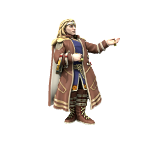

Slásverd af Fylkir

Pronouns he/him
Species Human (Uthgardt)
Age 24
Family Hæsta Þrumsdottr (Wife), Smiður Bölvaður (Father)
Affiliations Uthgar, Uthgardt Fylkiriate, Elk Tribe, Thunderbeast Tribe
Ideals
Slasverd isn't tremendously political, he largely does as he's told. He supports the Fylkiriate, but more out of loyalty to his Father and to his wife than out of any personal conviction.
Bonds
Despite the political nature of their marriage, Slasverd really does love his wife Hæsta Þrumsdottr.
Flaws
Vapid, vain, overly accustomed to pleasantries.
Few in the land can say a bad word about Fylkir Hæsta Þrumsdottr's choice of husband, which is in part why he is her choice of husband. This beloved prince of the Elk tribe is a charming, handsome and courageous favourite among both his own people and his adopted Thunderbeast kinsmen. How exactly this shining beacon of charm and good will maintains a relationship with the grim, serious Fylkir is a mystery, but their union joins together the largest military force in the region with an untapped agricultural powerhouse. Politically speaking, they are the perfect match.